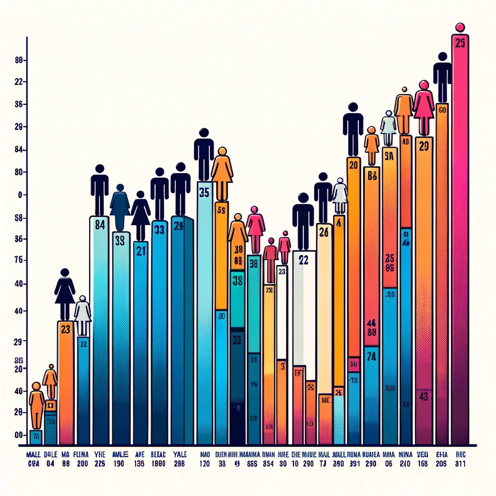

Jul 2023 - Sep 2023
This project aims to build an automatic credit card approval predictor using machine learning techniques,
similar to the systems used by commercial banks. The model will analyze applications and predict whether they should be approved
or rejected based on factors like loan balances, income levels, and credit inquiries.
Achieved a high model accuracy of 89 % in sign language letter classification with a convolutional neural network.
Implemented one-hot encoding to transform categorical labels into a format compatible with Keras models.
Boosted ASL letter classification accuracy by fine-tuning model hyperparameters and applying data augmentation.
The project focuses on implementing a Storage Manager, Buffer Manager, Record Manager, and a B+ Tree Index Manager in C. It includes functionalities such as file handling,
page management, buffer pool management, record manipulation,
and B+ Tree operations.
The project aims to demonstrate an understanding of database storage and indexing mechanisms,
and provides a foundation for building efficient database management systems.

Utilized R to analyze global life expectancy disparities and create informative scatter plots.
Investigated changes in life expectancy over time by constructing and visualizing datasets.
Demonstrated proficiency in data manipulation, visualization, and storytelling with R.
Communicated findings effectively through data-driven visualizations in a professional project setting.
By analyzing data from Stack Overflow, a vast repository of programming questions, we can assess the popularity and trends
of programming languages and technologies. Tracking the number of questions about specific technologies helps identify what's
widely used, while examining growth and decline in these tags informs us about the worthiness of investing time in them.
This project focuses Stack Exchange Data Explorer to provide insights into the changing landscape of languages like R, Python,
Java, and JavaScript over time.

This SQL script analyzes COVID-19 data to reveal global pandemic trends, including case and death
counts, population infection rates, and vaccination progress. It uses advanced SQL techniques like joins,
CTEs, temporary tables, and window functions for data manipulation and analysis.
A created view aids in visualizing the vaccination data.
This dashboard visualizes Washington house sales data with various interactive components. It features a time series chart of average house sale prices, a geographic map highlighting sales
by region, and distribution histograms for house prices, bedrooms, and bathrooms. Additionally, it provides a heat map
for property conditions and numerous filters for detailed data exploration.